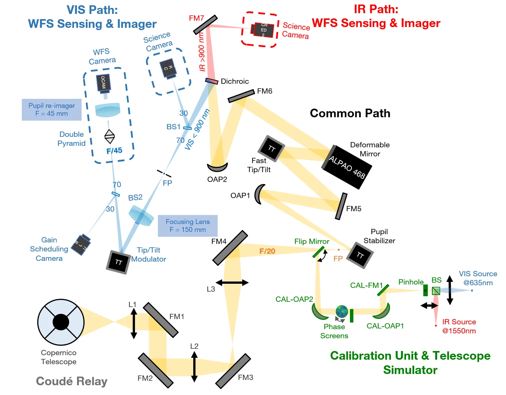
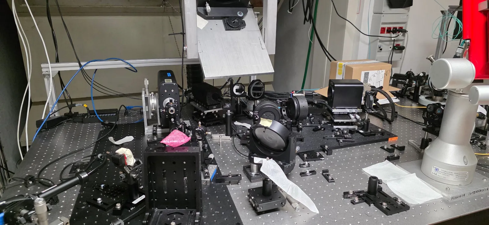
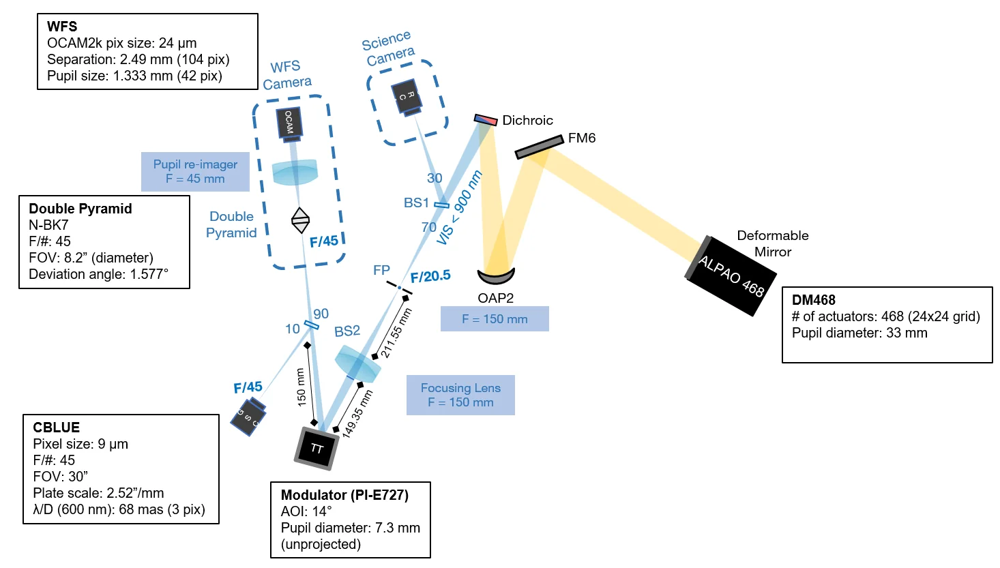

Bench architecture


Specifications
| Input beam | F/20.5 from the Coudé focus |
|---|---|
| VIS / NIR split | Long-pass dichroic: <900 nm reflected to VIS, NIR transmitted (via FM7) |
| VIS science port | Telecentric F/20.5, 1′ unvignetted FoV, 5.53″/mm, optimized for 600–900 nm |
| WFS and GSC focal plane | F/45 |
| Common path | Selector to dichroic on one 600 × 450 mm breadboard |
| Deformable mirror | ALPAO DM468: 468 actuators (24×24), 33 mm clear aperture |
|---|---|
| Pupil on DM | 31.6 mm unprojected; 31.6 × 32.3 mm at 12° AOI (±0.4 mm margin) |
| Wavefront sensor | Double pyramid (N-BK7, 3.05°), OCAM2K camera (24 µm pixels) |
| Pupil sampling | 42 px pupils, 2.49 mm (104 px) separation |
| Modulator | PI-E727 tip-tilt, 7.3 mm pupil, 14° AOI |
| Fast tip-tilt | 130 mm upstream of the DM; 0.008° per arcsec on sky |
| Pupil stabiliser | Step <0.01° (goal <0.001°) |
| Operational range | Guide star mag 0–11.2 |
| Wavelength | VIS 500–900 nm, NIR 1000–1700 nm |
|---|---|
| Science FoV | 1 arcmin for both VIS and NIR |
| PWFS FoV | 8 arcsec |
| Throughput | Science 4–8%, PWFS 6–12% |
| Cameras | ORCA for VIS, CRED2 for NIR |
Sources: Design Description Document (EKARUS VIS); OAO 2026 tutorials.
Common Path
The selector mirror, just after the Coudé focal plane, also works as pupil stabiliser. OAP1 images the pupil on the DM, with a fast tip-tilt mirror upstream to offload tip-tilt from the DM. OAP2, identical to OAP1, forms an intermediate focal plane. FM5 and FM6 fold the beam so everything from OAP1 to the dichroic fits on one breadboard.
| Pupil stabiliser | 30 mm after the F/20.5 focus. 1° tilt: PSF shift 1.05 mm (5.8″ on sky), pupil shift 73% of diameter. Max needed ≈ 0.33° for 25% pupil drift (FoV drift ≈ 1.9″). |
|---|---|
| Fast tip-tilt | 130 mm upstream of the DM. 1″ on sky = 0.008° rotation = 0.11% pupil shift on the DM. |
| DM468 | Pupil 31.6 mm, 12° AOI → 31.6 × 32.3 mm on a 33 mm clear aperture. Measured flat ≈ 6 nm RMS, TT stroke ≈ 15 µm surface. |
| Dichroic | Long-pass, AOI 15°. Custom part with 0.1° wedge on the second face to reduce astigmatism and NCPA; quotations pending. |
| Status | Aligned in Padova (June 2026), transmitted WFE ≈ 55 nm RMS over 33 mm. |
Documents
- Design Description Document (EKARUS VIS): common path, pupil stabiliser, tip-tilt, DM, dichroic (link to add)
- Common path AIT logbook (Padova)
- Interferometry of the common-path alignment (link to add)
WFS Channel

BS1 sends about 30% of the visible light to the VIS port. A re-imaging lens puts the pupil on the modulator and makes an F/45 focus. BS2 sends about 10% to the Gain Scheduling Camera (GSC) and 90% to the pyramid. A fold mirror before the pyramid focus can feed visiting WFSs.
| BS1 | Thorlabs BSS10 (30:70) or BSN10 (10:90), UV fused silica, 30′ wedge, used at 20° AOI |
|---|---|
| BS2 | Same options as BS1, 10:90 to the GSC |
| Modulator (PI-E727) | Pupil 7.3 mm (unprojected), AOI 14° (28° deflection). 1 λ/D at 800 nm = 0.003° on one axis, 0.003°/cos 14° on the other. |
| Double pyramid | Arcetri, two glued N-BK7 pyramids, face angle 3.05°, F/45. Cone angle 0.64°, deviation 1.577°. Average RMS WFE at tip 56 nm; 90% EE within ≈ 93 µm. |
| Pupil re-imager | AC254-045-B: 42 px pupils, 2.49 mm (104 px) separation. (AC254-060-B would give 55.5 px and 3.32 mm / 138 px.) |
| WFS camera | OCAM2K, 24 µm pixels |
| GSC camera | C-Blue, F/45, 30″ FoV, 2.52″/mm, exit pupil 330 mm before focus. 18.4 × 13.9″ field, 23 mas/px, λ/D at 600 nm = 68 mas (3 px). |
| BS1 out | Defocus 123 nm RMS (focus shift 6.9 mm at F/45), astigmatism 19 nm RMS. 4.4 mrad deviation: PSF shift ≈ 700 mas, pupil shift ≈ 10%. |
|---|---|
| BS2 out | Defocus 21 nm RMS (focus shift 1.2 mm at pyramid), astigmatism 10 nm RMS. PSF shift ≈ 380 mas, pupil shift ≈ 18%. |
Source: Design Description Document (EKARUS VIS). Values from the nominal design, without manufacturing tolerances.
Documents
- Design Description Document (EKARUS VIS): BS1, BS2, modulator, pyramid, pupil re-imager (link to add)
- Pyramid WFS characterization (link to add)
VIS Imager
The VIS science port receives about 30% of the visible light reflected by BS1. Its camera is a Hamamatsu ORCA-Flash4.0 LT3 (C11440-42U40) scientific CMOS camera.
| Beam | Telecentric F/20.5 |
|---|---|
| Field of view | 1′ diameter, unvignetted |
| Plate scale | 5.53″/mm |
| Wavelength | Optimized for 600–900 nm; shorter wavelengths possible with reduced performance (uncorrected differential chromatic focus) |
| On the ORCA-Flash4.0 LT3 | 35.9 mas/pixel; the 13.3 mm sensor spans 73.6″ × 73.6″, so the whole 1′ field is covered. λ/D is sampled by 1.9 px at 600 nm and 2.5 px at 800 nm |
Source: Design Description Document (EKARUS VIS). Spot diagrams and RMS WFE vs FoV are in the document. Values on the ORCA computed from its 6.5 µm pixels and the 5.53″/mm plate scale.
| Sensor | Scientific CMOS, 2048 × 2048 pixels, 6.5 µm × 6.5 µm; effective area 13.312 mm × 13.312 mm |
|---|---|
| Readout noise | Standard scan: 0.9 e⁻ median, 1.5 e⁻ rms. Rapid rolling: 1.3 e⁻ median, 1.9 e⁻ rms |
| Frame rate, full frame | 30 fps (standard scan), 40 fps (rapid rolling); faster with sub-array, up to 25 000 fps |
| Exposure time | 3 ms to 10 s (standard scan), 1 ms to 10 s (rapid rolling); shorter with sub-array |
| Full well, conversion | 30 000 e⁻; 0.46 e⁻/count; 16-bit output |
| Dark current | 0.6 e⁻/pixel/s at +10 °C sensor temperature |
| Cooling | Peltier and fan, sensor at +10 °C; stable about 5 minutes after power-on. Recommended room temperature 20–25 °C |
| Quantum efficiency | Peak about 82% near 550–600 nm; about 70% at 700 nm, 50% at 800 nm, 23% at 900 nm |
| Readout modes | Full frame, 2 × 2 and 4 × 4 binning, sub-array (rolling shutter, read from the centre outwards) |
| Triggering | Free running, external edge, level, synchronous readout and start trigger; global reset; programmable timing outputs (SMA) |
| Interface, mount | USB 3.1 Gen 1; C-mount (do not screw anything deeper than 7 mm) |
Source: ORCA-Flash4.0 LT3 C11440-42U40 instruction manual, Hamamatsu, ver. 1.1 (Dec 2022). QE values read from its typical spectral response curve.
Filters in front of the camera
We usually place a narrowband filter or a neutral density (ND) filter in front of the ORCA. A filter of thickness t and index n in the converging beam moves the focus back by about t(n − 1)/n (roughly a third of its thickness for glass). The ORCA is aligned so that it takes this defocus into account: it's in focus with a filter in place. Removing the filter, or using one of a different thickness, needs a refocus.
Don't let strong light reach the sensor without an ND filter: the manual warns that too much light, such as a high-energy laser, can damage the CMOS sensor.
IR Channel
Light above 900 nm passes through the dichroic and is folded by FM7 toward the NIR channel.
| Wavelength | 1000–1700 nm |
|---|---|
| Field of view | 1 arcmin |
| Camera | CRED2 |
Optical design and documents to add.
Dual Calibration Unit
The calibration unit and telescope simulator feed the bench with artificial sources and turbulence, through a flip mirror into the common path.
| Sources | VIS 635 nm, IR 1550 nm, through a pinhole |
|---|---|
| Turbulence | Phase screens |
| Status | Hardware received in Teramo; alignment planned for July 2026, then transport to Asiago and commissioning |
Sources: bench schematic; Newsletter April–May 2026.
RTC & ICS
Short description of the real-time computer (RTC) and the instrument control software (ICS): to add.
| Step | Time |
|---|---|
| WFS camera exposure and readout | TBD |
| Frame transfer to the RTC | TBD |
| Slope computation | TBD |
| Wavefront reconstruction and control | TBD |
| Command transfer to the DM | TBD |
| DM response | TBD |
| Total loop delay | TBD |
Architettura del banco
Specifiche
| Fascio d’ingresso | F/20,5 dal fuoco Coudé |
|---|---|
| Separazione VIS / NIR | Dicroico passa-alto: <900 nm riflesso verso il VIS, NIR trasmesso (tramite FM7) |
| Porta scientifica VIS | Telecentrico F/20,5, campo di 1′ senza vignettatura, 5,53″/mm, ottimizzato per 600–900 nm |
| Piano focale WFS e GSC | F/45 |
| Cammino comune | Dal selettore al dicroico su un’unica breadboard da 600 × 450 mm |
| Specchio deformabile | ALPAO DM468: 468 attuatori (24×24), apertura utile 33 mm |
|---|---|
| Pupilla sul DM | 31,6 mm non proiettata; 31,6 × 32,3 mm a 12° di incidenza (margine ±0,4 mm) |
| Sensore di fronte d’onda | Doppia piramide (N-BK7, 3,05°), camera OCAM2K (pixel da 24 µm) |
| Campionamento della pupilla | Pupille da 42 px, separazione 2,49 mm (104 px) |
| Modulatore | Tip-tilt PI-E727, pupilla 7,3 mm, incidenza 14° |
| Tip-tilt veloce | 130 mm a monte del DM; 0,008° per arcosecondo in cielo |
| Stabilizzatore di pupilla | Passo <0,01° (obiettivo <0,001°) |
| Intervallo operativo | Stella guida mag 0–11,2 |
| Lunghezza d’onda | VIS 500–900 nm, NIR 1000–1700 nm |
|---|---|
| Campo scientifico | 1 arcominuto sia per il VIS sia per il NIR |
| Campo del PWFS | 8 arcosecondi |
| Trasmissione | Scienza 4–8%, PWFS 6–12% |
| Camere | ORCA per il VIS, CRED2 per il NIR |
Fonti: Design Description Document (EKARUS VIS); tutorial OAO 2026.
Cammino comune
Lo specchio selettore, subito dopo il piano focale Coudé, funziona anche da stabilizzatore di pupilla. OAP1 forma l’immagine della pupilla sul DM, con uno specchio tip-tilt veloce a monte per scaricare il tip-tilt dal DM. OAP2, identico a OAP1, forma un piano focale intermedio. FM5 e FM6 ripiegano il fascio così che tutto, da OAP1 al dicroico, stia su un’unica breadboard.
| Stabilizzatore di pupilla | 30 mm dopo il fuoco F/20,5. Inclinazione di 1°: spostamento della PSF 1,05 mm (5,8″ in cielo), spostamento della pupilla 73% del diametro. Massimo necessario ≈ 0,33° per una deriva di pupilla del 25% (deriva del campo ≈ 1,9″). |
|---|---|
| Tip-tilt veloce | 130 mm a monte del DM. 1″ in cielo = rotazione di 0,008° = spostamento della pupilla dello 0,11% sul DM. |
| DM468 | Pupilla 31,6 mm, incidenza 12° → 31,6 × 32,3 mm su un’apertura utile di 33 mm. Flat misurato ≈ 6 nm RMS, corsa TT ≈ 15 µm di superficie. |
| Dicroico | Passa-alto, incidenza 15°. Componente su misura con cuneo di 0,1° sulla seconda faccia per ridurre astigmatismo e NCPA; preventivi in attesa. |
| Stato | Allineato a Padova (giugno 2026), WFE trasmesso ≈ 55 nm RMS su 33 mm. |
Documenti
- Design Description Document (EKARUS VIS): cammino comune, stabilizzatore di pupilla, tip-tilt, DM, dicroico (link da aggiungere)
- Logbook AIT del cammino comune (Padova)
- Interferometria dell’allineamento del cammino comune (link da aggiungere)
Canale WFS
BS1 invia circa il 30% della luce visibile alla porta VIS. Una lente di re-imaging porta la pupilla sul modulatore e forma un fuoco F/45. BS2 invia circa il 10% alla Gain Scheduling Camera (GSC) e il 90% alla piramide. Uno specchio di rinvio prima del fuoco della piramide può alimentare WFS ospiti.
| BS1 | Thorlabs BSS10 (30:70) o BSN10 (10:90), silice fusa UV, cuneo di 30′, usato a 20° di incidenza |
|---|---|
| BS2 | Stesse opzioni di BS1, 10:90 verso la GSC |
| Modulatore (PI-E727) | Pupilla 7,3 mm (non proiettata), incidenza 14° (deflessione 28°). 1 λ/D a 800 nm = 0,003° su un asse, 0,003°/cos 14° sull’altro. |
| Doppia piramide | Arcetri, due piramidi in N-BK7 incollate, angolo delle facce 3,05°, F/45. Angolo del cono 0,64°, deviazione 1,577°. WFE RMS medio al vertice 56 nm; 90% dell’EE entro ≈ 93 µm. |
| Re-imager di pupilla | AC254-045-B: pupille da 42 px, separazione 2,49 mm (104 px). (AC254-060-B darebbe 55,5 px e 3,32 mm / 138 px.) |
| Camera WFS | OCAM2K, pixel da 24 µm |
| Camera GSC | C-Blue, F/45, campo di 30″, 2,52″/mm, pupilla d’uscita 330 mm prima del fuoco. Campo di 18,4 × 13,9″, 23 mas/px, λ/D a 600 nm = 68 mas (3 px). |
| BS1 rimosso | Defocus 123 nm RMS (spostamento del fuoco 6,9 mm a F/45), astigmatismo 19 nm RMS. Deviazione di 4,4 mrad: spostamento della PSF ≈ 700 mas, della pupilla ≈ 10%. |
|---|---|
| BS2 rimosso | Defocus 21 nm RMS (spostamento del fuoco 1,2 mm alla piramide), astigmatismo 10 nm RMS. Spostamento della PSF ≈ 380 mas, della pupilla ≈ 18%. |
Fonte: Design Description Document (EKARUS VIS). Valori del progetto nominale, senza tolleranze di fabbricazione.
Documenti
- Design Description Document (EKARUS VIS): BS1, BS2, modulatore, piramide, re-imager di pupilla (link da aggiungere)
- Caratterizzazione del WFS a piramide (link da aggiungere)
Imager VIS
La porta scientifica VIS riceve circa il 30% della luce visibile riflessa da BS1. La sua camera è una Hamamatsu ORCA-Flash4.0 LT3 (C11440-42U40), una camera CMOS scientifica.
| Fascio | Telecentrico F/20,5 |
|---|---|
| Campo di vista | 1′ di diametro, senza vignettatura |
| Scala di piatto | 5,53″/mm |
| Lunghezza d’onda | Ottimizzato per 600–900 nm; lunghezze d’onda più corte possibili con prestazioni ridotte (fuoco cromatico differenziale non corretto) |
| Sulla ORCA-Flash4.0 LT3 | 35,9 mas/pixel; il sensore da 13,3 mm copre 73,6″ × 73,6″, quindi l’intero campo di 1′ è coperto. λ/D è campionato da 1,9 px a 600 nm e 2,5 px a 800 nm |
Fonte: Design Description Document (EKARUS VIS). Spot diagram e WFE RMS in funzione del campo sono nel documento. Valori sulla ORCA calcolati dai suoi pixel da 6,5 µm e dalla scala di 5,53″/mm.
| Sensore | CMOS scientifico, 2048 × 2048 pixel, 6,5 µm × 6,5 µm; area efficace 13,312 mm × 13,312 mm |
|---|---|
| Rumore di lettura | Standard scan: 0,9 e⁻ mediana, 1,5 e⁻ rms. Rapid rolling: 1,3 e⁻ mediana, 1,9 e⁻ rms |
| Frame rate, quadro intero | 30 fps (standard scan), 40 fps (rapid rolling); più veloce con sub-array, fino a 25 000 fps |
| Tempo di esposizione | Da 3 ms a 10 s (standard scan), da 1 ms a 10 s (rapid rolling); più breve con sub-array |
| Full well, conversione | 30 000 e⁻; 0,46 e⁻/conteggio; uscita a 16 bit |
| Corrente di buio | 0,6 e⁻/pixel/s con il sensore a +10 °C |
| Raffreddamento | Peltier e ventola, sensore a +10 °C; stabile circa 5 minuti dopo l’accensione. Temperatura ambiente consigliata 20–25 °C |
| Efficienza quantica | Picco di circa 82% vicino a 550–600 nm; circa 70% a 700 nm, 50% a 800 nm, 23% a 900 nm |
| Modalità di lettura | Quadro intero, binning 2 × 2 e 4 × 4, sub-array (rolling shutter, lettura dal centro verso l’esterno) |
| Trigger | Free running, trigger esterno su fronte, su livello, synchronous readout e start trigger; global reset; uscite di temporizzazione programmabili (SMA) |
| Interfaccia, attacco | USB 3.1 Gen 1; attacco C (non avvitare nulla oltre i 7 mm) |
Fonte: manuale d’istruzioni ORCA-Flash4.0 LT3 C11440-42U40, Hamamatsu, ver. 1.1 (dic 2022). Valori di QE letti dalla curva di risposta spettrale tipica.
Filtri davanti alla camera
Di solito mettiamo un filtro a banda stretta o un filtro a densità neutra (ND) davanti alla ORCA. Un filtro di spessore t e indice n nel fascio convergente sposta indietro il fuoco di circa t(n − 1)/n (circa un terzo del suo spessore per il vetro). La ORCA è allineata tenendo conto di questo defocus: è a fuoco con un filtro montato. Togliere il filtro, o usarne uno di spessore diverso, richiede di rifocheggiare.
Non far arrivare luce intensa sul sensore senza un filtro ND: il manuale avverte che troppa luce, per esempio un laser ad alta energia, può danneggiare il sensore CMOS.
Canale IR
La luce oltre i 900 nm attraversa il dicroico e viene deviata da FM7 verso il canale NIR.
| Lunghezza d’onda | 1000–1700 nm |
|---|---|
| Campo di vista | 1 arcominuto |
| Camera | CRED2 |
Disegno ottico e documenti da aggiungere.
Doppia unità di calibrazione
L’unità di calibrazione e il simulatore di telescopio alimentano il banco con sorgenti artificiali e turbolenza, tramite uno specchio ribaltabile nel cammino comune.
| Sorgenti | VIS 635 nm, IR 1550 nm, attraverso un pinhole |
|---|---|
| Turbolenza | Schermi di fase |
| Stato | Hardware ricevuto a Teramo; allineamento previsto per luglio 2026, poi trasporto ad Asiago e commissioning |
Fonti: schema del banco; Newsletter aprile–maggio 2026.
RTC e ICS
Breve descrizione del computer real-time (RTC) e del software di controllo dello strumento (ICS): da aggiungere.
| Passo | Tempo |
|---|---|
| Esposizione e lettura della camera WFS | Da definire |
| Trasferimento del frame all’RTC | Da definire |
| Calcolo delle pendenze | Da definire |
| Ricostruzione del fronte d’onda e controllo | Da definire |
| Trasferimento dei comandi al DM | Da definire |
| Risposta del DM | Da definire |
| Ritardo totale dell’anello | Da definire |
Architecture du banc
Spécifications
| Faisceau d’entrée | F/20,5 depuis le foyer Coudé |
|---|---|
| Séparation VIS / NIR | Dichroïque passe-haut : <900 nm réfléchi vers le VIS, NIR transmis (via FM7) |
| Port scientifique VIS | Télécentrique F/20,5, champ de 1′ sans vignettage, 5,53″/mm, optimisé pour 600–900 nm |
| Plan focal WFS et GSC | F/45 |
| Chemin commun | Du sélecteur au dichroïque sur une seule breadboard de 600 × 450 mm |
| Miroir déformable | ALPAO DM468 : 468 actionneurs (24×24), ouverture utile 33 mm |
|---|---|
| Pupille sur le DM | 31,6 mm non projetée ; 31,6 × 32,3 mm à 12° d’incidence (marge ±0,4 mm) |
| Analyseur de surface d’onde | Double pyramide (N-BK7, 3,05°), caméra OCAM2K (pixels de 24 µm) |
| Échantillonnage de la pupille | Pupilles de 42 px, séparation 2,49 mm (104 px) |
| Modulateur | Tip-tilt PI-E727, pupille de 7,3 mm, incidence 14° |
| Tip-tilt rapide | 130 mm en amont du DM ; 0,008° par seconde d’arc sur le ciel |
| Stabilisateur de pupille | Pas <0,01° (objectif <0,001°) |
| Domaine de fonctionnement | Étoile guide mag 0–11,2 |
| Longueur d’onde | VIS 500–900 nm, NIR 1000–1700 nm |
|---|---|
| Champ scientifique | 1 minute d’arc pour le VIS et le NIR |
| Champ du PWFS | 8 secondes d’arc |
| Transmission | Science 4–8 %, PWFS 6–12 % |
| Caméras | ORCA pour le VIS, CRED2 pour le NIR |
Sources : Design Description Document (EKARUS VIS) ; tutoriels OAO 2026.
Chemin commun
Le miroir sélecteur, juste après le plan focal Coudé, sert aussi de stabilisateur de pupille. OAP1 forme l’image de la pupille sur le DM, avec un miroir tip-tilt rapide en amont pour décharger le DM du tip-tilt. OAP2, identique à OAP1, forme un plan focal intermédiaire. FM5 et FM6 replient le faisceau pour que tout, d’OAP1 au dichroïque, tienne sur une seule breadboard.
| Stabilisateur de pupille | 30 mm après le foyer F/20,5. Inclinaison de 1° : déplacement de la PSF 1,05 mm (5,8″ sur le ciel), déplacement de la pupille 73 % du diamètre. Maximum nécessaire ≈ 0,33° pour une dérive de pupille de 25 % (dérive du champ ≈ 1,9″). |
|---|---|
| Tip-tilt rapide | 130 mm en amont du DM. 1″ sur le ciel = rotation de 0,008° = déplacement de la pupille de 0,11 % sur le DM. |
| DM468 | Pupille 31,6 mm, incidence 12° → 31,6 × 32,3 mm sur une ouverture utile de 33 mm. Flat mesuré ≈ 6 nm RMS, course TT ≈ 15 µm en surface. |
| Dichroïque | Passe-haut, incidence 15°. Pièce sur mesure avec un prisme de 0,1° sur la seconde face pour réduire l’astigmatisme et les NCPA ; devis en attente. |
| Statut | Aligné à Padoue (juin 2026), WFE transmis ≈ 55 nm RMS sur 33 mm. |
Documents
- Design Description Document (EKARUS VIS) : chemin commun, stabilisateur de pupille, tip-tilt, DM, dichroïque (lien à ajouter)
- Journal AIT du chemin commun (Padoue)
- Interférométrie de l’alignement du chemin commun (lien à ajouter)
Voie WFS
BS1 envoie environ 30 % de la lumière visible vers le port VIS. Une lentille de réimagerie forme l’image de la pupille sur le modulateur et un foyer F/45. BS2 envoie environ 10 % vers la Gain Scheduling Camera (GSC) et 90 % vers la pyramide. Un miroir de renvoi avant le foyer de la pyramide peut alimenter des WFS invités.
| BS1 | Thorlabs BSS10 (30:70) ou BSN10 (10:90), silice fondue UV, prisme de 30′, utilisé à 20° d’incidence |
|---|---|
| BS2 | Mêmes options que BS1, 10:90 vers la GSC |
| Modulateur (PI-E727) | Pupille 7,3 mm (non projetée), incidence 14° (déviation 28°). 1 λ/D à 800 nm = 0,003° sur un axe, 0,003°/cos 14° sur l’autre. |
| Double pyramide | Arcetri, deux pyramides en N-BK7 collées, angle des faces 3,05°, F/45. Angle du cône 0,64°, déviation 1,577°. WFE RMS moyen au sommet 56 nm ; 90 % de l’EE dans ≈ 93 µm. |
| Réimageur de pupille | AC254-045-B : pupilles de 42 px, séparation 2,49 mm (104 px). (AC254-060-B donnerait 55,5 px et 3,32 mm / 138 px.) |
| Caméra WFS | OCAM2K, pixels de 24 µm |
| Caméra GSC | C-Blue, F/45, champ de 30″, 2,52″/mm, pupille de sortie 330 mm avant le foyer. Champ de 18,4 × 13,9″, 23 mas/px, λ/D à 600 nm = 68 mas (3 px). |
| BS1 retirée | Défocalisation 123 nm RMS (déplacement du foyer 6,9 mm à F/45), astigmatisme 19 nm RMS. Déviation de 4,4 mrad : déplacement de la PSF ≈ 700 mas, de la pupille ≈ 10 %. |
|---|---|
| BS2 retirée | Défocalisation 21 nm RMS (déplacement du foyer 1,2 mm à la pyramide), astigmatisme 10 nm RMS. Déplacement de la PSF ≈ 380 mas, de la pupille ≈ 18 %. |
Source : Design Description Document (EKARUS VIS). Valeurs de la conception nominale, sans tolérances de fabrication.
Documents
- Design Description Document (EKARUS VIS) : BS1, BS2, modulateur, pyramide, réimageur de pupille (lien à ajouter)
- Caractérisation du WFS à pyramide (lien à ajouter)
Imageur VIS
Le port scientifique VIS reçoit environ 30 % de la lumière visible réfléchie par BS1. Sa caméra est une Hamamatsu ORCA-Flash4.0 LT3 (C11440-42U40), une caméra CMOS scientifique.
| Faisceau | Télécentrique F/20,5 |
|---|---|
| Champ de vue | 1′ de diamètre, sans vignettage |
| Échelle | 5,53″/mm |
| Longueur d’onde | Optimisé pour 600–900 nm ; longueurs d’onde plus courtes possibles avec des performances réduites (focus chromatique différentiel non corrigé) |
| Sur l’ORCA-Flash4.0 LT3 | 35,9 mas/pixel ; le capteur de 13,3 mm couvre 73,6″ × 73,6″, donc tout le champ de 1′ est couvert. λ/D est échantillonné par 1,9 px à 600 nm et 2,5 px à 800 nm |
Source : Design Description Document (EKARUS VIS). Les spot diagrams et le WFE RMS selon le champ sont dans le document. Valeurs sur l’ORCA calculées à partir de ses pixels de 6,5 µm et de l’échelle de 5,53″/mm.
| Capteur | CMOS scientifique, 2048 × 2048 pixels, 6,5 µm × 6,5 µm ; surface utile 13,312 mm × 13,312 mm |
|---|---|
| Bruit de lecture | Standard scan : 0,9 e⁻ médiane, 1,5 e⁻ rms. Rapid rolling : 1,3 e⁻ médiane, 1,9 e⁻ rms |
| Cadence, image complète | 30 i/s (standard scan), 40 i/s (rapid rolling) ; plus rapide en sous-fenêtre, jusqu’à 25 000 i/s |
| Temps de pose | De 3 ms à 10 s (standard scan), de 1 ms à 10 s (rapid rolling) ; plus court en sous-fenêtre |
| Capacité, conversion | 30 000 e⁻ ; 0,46 e⁻/ADU ; sortie 16 bits |
| Courant d’obscurité | 0,6 e⁻/pixel/s avec le capteur à +10 °C |
| Refroidissement | Peltier et ventilateur, capteur à +10 °C ; stable environ 5 minutes après la mise sous tension. Température ambiante conseillée 20–25 °C |
| Efficacité quantique | Pic d’environ 82 % vers 550–600 nm ; environ 70 % à 700 nm, 50 % à 800 nm, 23 % à 900 nm |
| Modes de lecture | Image complète, binning 2 × 2 et 4 × 4, sous-fenêtre (obturateur déroulant, lecture du centre vers l’extérieur) |
| Déclenchement | Free running, déclenchement externe sur front, sur niveau, synchronous readout et start trigger ; global reset ; sorties de synchronisation programmables (SMA) |
| Interface, monture | USB 3.1 Gen 1 ; monture C (ne rien visser au-delà de 7 mm) |
Source : manuel d’utilisation ORCA-Flash4.0 LT3 C11440-42U40, Hamamatsu, ver. 1.1 (déc. 2022). Valeurs d’EQ lues sur sa courbe de réponse spectrale typique.
Filtres devant la caméra
Nous plaçons généralement un filtre à bande étroite ou un filtre de densité neutre (ND) devant l’ORCA. Un filtre d’épaisseur t et d’indice n dans le faisceau convergent recule le foyer d’environ t(n − 1)/n (environ un tiers de son épaisseur pour du verre). L’ORCA est alignée en tenant compte de cette défocalisation : elle est au point avec un filtre en place. Retirer le filtre, ou en utiliser un d’une autre épaisseur, demande de refaire la mise au point.
Ne laissez pas une lumière intense atteindre le capteur sans filtre ND : le manuel avertit qu’un excès de lumière, par exemple un laser de forte énergie, peut endommager le capteur CMOS.
Voie IR
La lumière au-delà de 900 nm traverse le dichroïque et est renvoyée par FM7 vers la voie NIR.
| Longueur d’onde | 1000–1700 nm |
|---|---|
| Champ de vue | 1 minute d’arc |
| Caméra | CRED2 |
Conception optique et documents à ajouter.
Double unité de calibration
L’unité de calibration et le simulateur de télescope alimentent le banc en sources artificielles et en turbulence, via un miroir basculant dans le chemin commun.
| Sources | VIS 635 nm, IR 1550 nm, à travers un trou source |
|---|---|
| Turbulence | Écrans de phase |
| Statut | Matériel reçu à Teramo ; alignement prévu en juillet 2026, puis transport à Asiago et mise en service |
Sources : schéma du banc ; Newsletter avril–mai 2026.
RTC et ICS
Courte description du calculateur temps réel (RTC) et du logiciel de contrôle de l’instrument (ICS) : à ajouter.
| Étape | Durée |
|---|---|
| Pose et lecture de la caméra WFS | À définir |
| Transfert de l’image vers le RTC | À définir |
| Calcul des pentes | À définir |
| Reconstruction du front d’onde et commande | À définir |
| Transfert des commandes vers le DM | À définir |
| Réponse du DM | À définir |
| Retard total de la boucle | À définir |